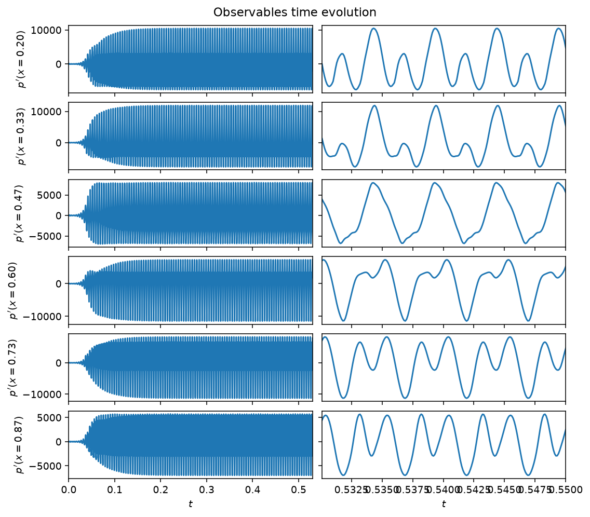
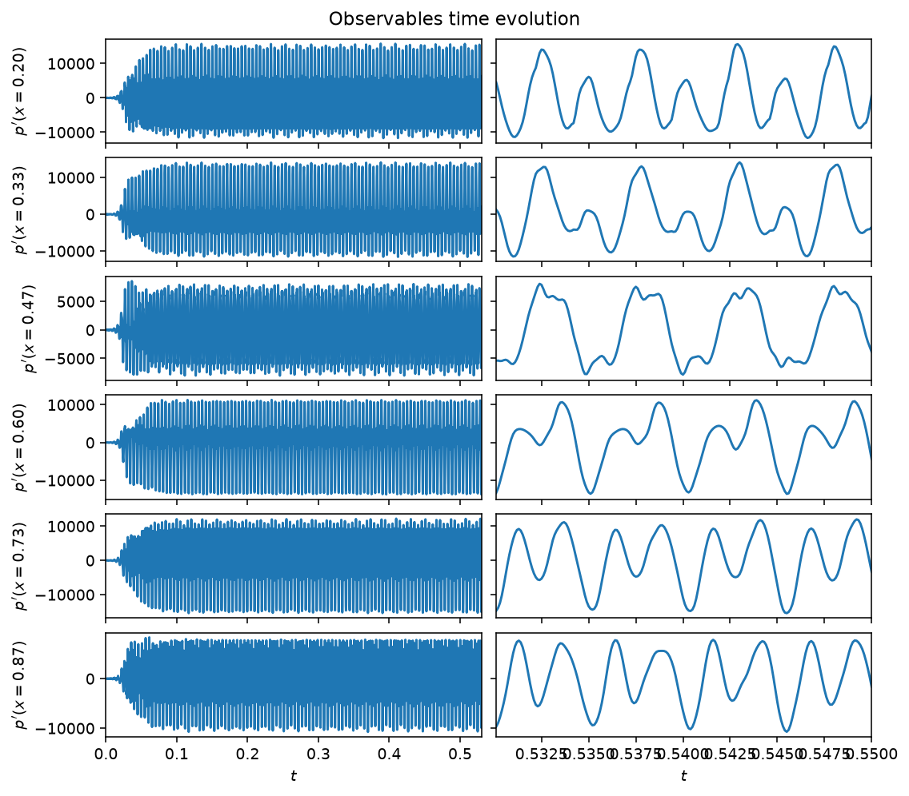
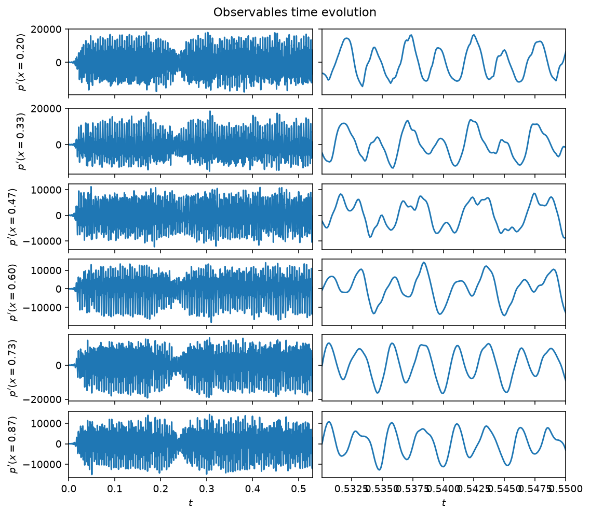
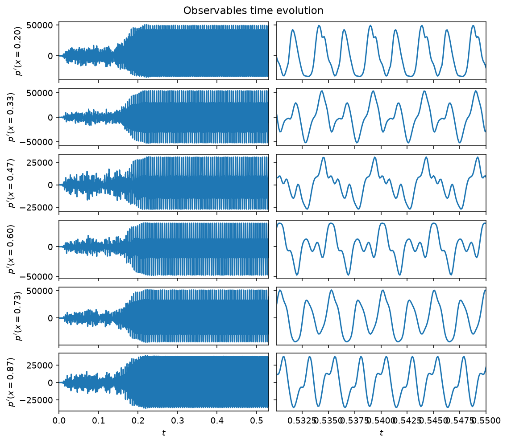
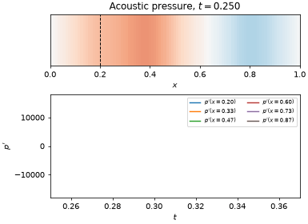
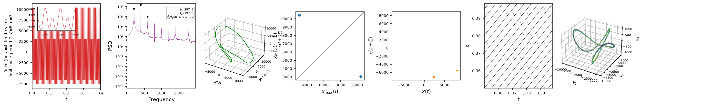

Rijke tube
The Rijke tube is a longitudinal thermoacoustic system: a heated gauze inside
a tube couples an unsteady heat release to the acoustic field, and the two
can lock into a self-sustained oscillation. The acoustic velocity and
pressure are expanded on \(N_m\) Galerkin modes, giving modal ODEs for each
mode's amplitude \(\eta_j\) and its rate \(\mu_j\), damped at rate
\(\zeta_j = C_1 j^2 + C_2 \sqrt{j}\) and driven by the heat release projected
onto the modes. The heat release itself follows a gain-delay law: it depends
on the acoustic velocity at the flame location \(x_f\), delayed by a time
\(\tau\) and related through a square-root (\(\text{law}='sqrt'\)) or a
saturating arctangent (\(\text{law}='tan'\)) nonlinearity. The delay is
realized numerically by advecting the velocity along an auxiliary field
discretized with \(N_c\) Chebyshev collocation points. The estimable
parameters are the heat-release intensity \(\beta\), the delay \(\tau\), the
damping coefficients \(C_1\), \(C_2\), and the saturation \(\kappa\); the
observables are the pressure at Nq microphone locations. The full modal
equations are in the API reference below.
\(\beta\) alone routes the system through a sequence of regimes, four of which
are pre-tabulated in CASES and selected with case='...'.
Quickstart
from dynamodels.physical import Rijke
model = Rijke(case='limit_cycle', dt=1e-4)
psi, t = model.time_integrate(Nt=5000)
model.update_history(psi, t)
model.visualize_observable_hist()
model.close()
Regimes

case='limit_cycle' (\(\beta=4\), the class default): a period-2 limit
cycle, its two harmonics visible as the alternating tall/short peaks in the
zoomed panel.

case='frequency_locked' (\(\beta=8\)): two modes lock onto a common
period, giving the slow amplitude-modulated (beating) waveform in the
zoomed panel.

case='chaotic' (\(\beta=12\), measured \(\lambda_1=161\,\mathrm{s^{-1}}\)):
an aperiodic, broadband pressure signal.

case='relaminarized' (\(\beta=18\)): past the chaotic window, the system
relaminarizes onto a period-3 limit cycle at a larger amplitude.
The microphone traces above are samples of a field that fills the whole tube. For the chaotic case, an animation shows both at once:

case='chaotic' (\(\beta=12\)), past the transient. Top: the acoustic pressure
\(p'(x,t)\) along the tube, with the flame location \(x_f=0.2\) dashed. Bottom: the
same field sampled at the six microphones. The pressure node imposed by the
open ends stays fixed while the amplitude varies aperiodically. The
Rijke tube tutorial builds this figure step by step.
Nonlinear diagnostics

Diagnostics from ntsa.characterize on the limit-cycle
case, left to right: the observable time series with a zoomed inset; power
spectral density; the 3-D delay-embedded portrait; the first-return map of
the maxima; a plane-crossing Poincare section; a recurrence plot; and a 3-D
classical-MDS embedding of the full modal state. The last panel (leading
Lyapunov exponent) is blank here: for a limit cycle this close to neutral,
the perturbation-growth fit's own reliability guard abstains rather than
report a noisy estimate -- see Analysing a model.
Reference
Novoa, A., & Magri, L. (2022). Real-time thermoacoustic data assimilation. Journal of Fluid Mechanics, 948, A35. doi:10.1017/jfm.2022.653
API
dynamodels.physical.rijke.Rijke
Bases: Model
Rijke tube — longitudinal thermoacoustic low-order model.
The acoustic velocity and pressure perturbations are expanded on \(N_m\) Galerkin modes with wavenumbers \(k_j = j\pi/L\),
giving the modal ODEs
where \(\bar\rho\), \(\bar{c}\) (and \(\bar{u}\), \(\bar{p}\), \(\bar\gamma\) below) are fixed mean-flow properties, weight-averaged across the temperature jump at the flame location \(x_f\), and \(\zeta_j\) is the modal damping. The heat release is projected onto the modes as
with a gain–delay law relating \(\dot{q}'\) to the (time-delayed) acoustic
velocity at the flame, \(u_f(t) \equiv u'(x_f, t - \tau)\): a square-root law
(law='sqrt')
or a saturating arctangent law (law='tan')
The delay \(\tau\) is realized by advecting \(u'(x_f, t)\) along an auxiliary field discretized with \(N_c\) Chebyshev collocation points, and interpolating it at the point corresponding to the elapsed delay to obtain \(u_f(t)\).
The estimable parameters are \(\beta\), \(\tau\), the damping coefficients \(C_1\),
\(C_2\), and \(\kappa\) (only active for law='tan'). The observables are the
pressure at Nq microphone locations.
Four named regimes along the \(\beta\) route are pre-tabulated in CASES and
selected with case='...': 'limit_cycle' (the class default, a period-2
limit cycle), 'frequency_locked', 'chaotic', and 'relaminarized'
(a period-3 limit cycle). Explicit keyword arguments override a case's values.
References
Nóvoa & Magri (2022). Real-time thermoacoustic data assimilation. J. Fluid Mech., 948, A35. DOI: 10.1017/jfm.2022.653.
Source code in dynamodels/physical/rijke.py
30 31 32 33 34 35 36 37 38 39 40 41 42 43 44 45 46 47 48 49 50 51 52 53 54 55 56 57 58 59 60 61 62 63 64 65 66 67 68 69 70 71 72 73 74 75 76 77 78 79 80 81 82 83 84 85 86 87 88 89 90 91 92 93 94 95 96 97 98 99 100 101 102 103 104 105 106 107 108 109 110 111 112 113 114 115 116 117 118 119 120 121 122 123 124 125 126 127 128 129 130 131 132 133 134 135 136 137 138 139 140 141 142 143 144 145 146 147 148 149 150 151 152 153 154 155 156 157 158 159 160 161 162 163 164 165 166 167 168 169 170 171 172 173 174 175 176 177 178 179 180 181 182 183 184 185 186 187 188 189 190 191 192 193 194 195 196 197 198 199 200 201 202 203 204 205 206 207 208 209 210 211 212 213 214 215 216 217 218 219 220 221 222 223 224 225 226 227 228 229 230 231 232 233 234 235 236 237 238 239 240 241 242 243 244 245 246 247 248 249 250 251 252 253 254 255 256 257 258 259 260 261 262 263 264 265 266 267 268 269 270 271 272 273 274 275 276 277 278 279 280 281 282 283 284 285 286 287 288 289 290 291 292 293 294 295 296 297 298 299 300 301 302 303 304 305 306 307 308 309 310 311 312 313 314 315 316 317 318 319 320 321 322 323 324 325 326 327 328 329 330 331 332 333 334 335 336 337 338 339 340 341 342 343 344 345 346 347 348 349 350 351 352 353 354 355 356 357 358 359 360 361 362 363 364 365 366 367 368 369 370 371 372 373 374 375 376 377 378 379 380 381 382 383 384 385 386 387 388 389 390 391 392 393 | |
time_derivative(t, psi, C1, C2, beta, kappa, tau, cosomjxf, Dc, gc, jpiL, L, law, meanFlow, Nc, Nm, tau_adv, sinomjxf)
staticmethod
Time derivative of the Rijke tube governing equations (see class docstring).
Parameters:
| Name | Type | Description | Default |
|---|---|---|---|
t
|
float
|
Current time. |
required |
psi
|
ndarray
|
Augmented state vector; the first |
required |
C1
|
float
|
Modal damping coefficients, \(\zeta_j = C_1 j^2 + C_2 \sqrt{j}\). |
required |
C2
|
float
|
Modal damping coefficients, \(\zeta_j = C_1 j^2 + C_2 \sqrt{j}\). |
required |
beta
|
float
|
Heat-release intensity. |
required |
kappa
|
float
|
Saturation parameter used by the |
required |
tau
|
float
|
Time delay of the flame response. |
required |
cosomjxf
|
ndarray
|
Precomputed \(\cos(k_j x_f)\), \(\sin(k_j x_f)\) for each mode \(j\), used respectively to evaluate \(u'(x_f, t)\) and to project the heat release onto the \(\mu\) modes. |
required |
sinomjxf
|
ndarray
|
Precomputed \(\cos(k_j x_f)\), \(\sin(k_j x_f)\) for each mode \(j\), used respectively to evaluate \(u'(x_f, t)\) and to project the heat release onto the \(\mu\) modes. |
required |
Dc
|
ndarray
|
Chebyshev differentiation matrix and collocation points used to advect the delay line. |
required |
gc
|
ndarray
|
Chebyshev differentiation matrix and collocation points used to advect the delay line. |
required |
jpiL
|
ndarray
|
Modal wavenumbers \(k_j = j\pi/L\). |
required |
L
|
float
|
Tube length. |
required |
law
|
str
|
Heat-release law, |
required |
meanFlow
|
dict
|
Mean-flow properties at the flame (\(\bar\rho\), \(\bar u\), \(\bar p\), \(\bar c\), \(\bar\gamma\), \(\bar T\)). |
required |
Nc
|
int
|
Number of Chebyshev modes discretizing the delay line. |
required |
Nm
|
int
|
Number of Galerkin modes. |
required |
tau_adv
|
float
|
Reference advection time spanned by the delay line. |
required |
Returns:
| Type | Description |
|---|---|
ndarray
|
Concatenated time derivative of the augmented state vector. |
Source code in dynamodels/physical/rijke.py
229 230 231 232 233 234 235 236 237 238 239 240 241 242 243 244 245 246 247 248 249 250 251 252 253 254 255 256 257 258 259 260 261 262 263 264 265 266 267 268 269 270 271 272 273 274 275 276 277 278 279 280 281 282 283 284 285 286 287 288 289 290 291 292 293 294 295 296 297 298 299 300 301 302 303 304 305 306 307 308 309 310 311 | |
visualize_spatiotemporal_hist(y_hist=None, t=None, nrows=None, averaged=False, reference_y=1.0, reference_t=1.0, **kwargs)
Visualize the spatiotemporal evolution of the Rijke tube model in the physical space.
Source code in dynamodels/physical/rijke.py
315 316 317 318 319 320 321 322 323 324 325 326 327 328 329 330 331 332 333 334 335 336 337 338 339 340 341 342 343 344 345 346 347 348 349 350 351 352 353 354 355 356 357 358 359 360 361 362 363 364 365 366 367 368 369 370 371 372 373 374 375 376 377 378 379 380 381 382 383 384 385 386 387 388 389 390 391 392 393 | |